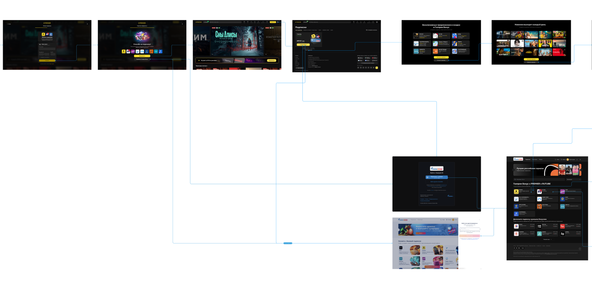
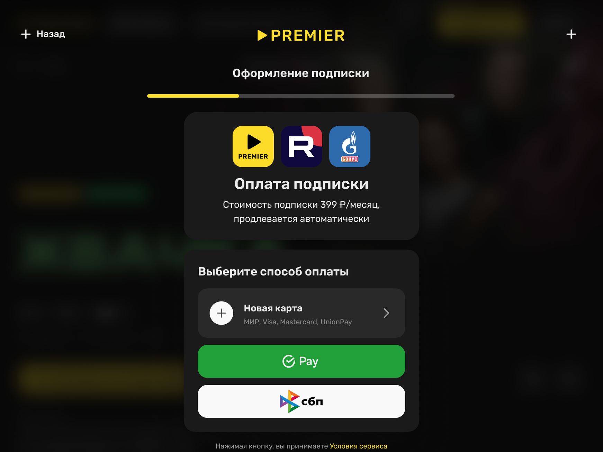
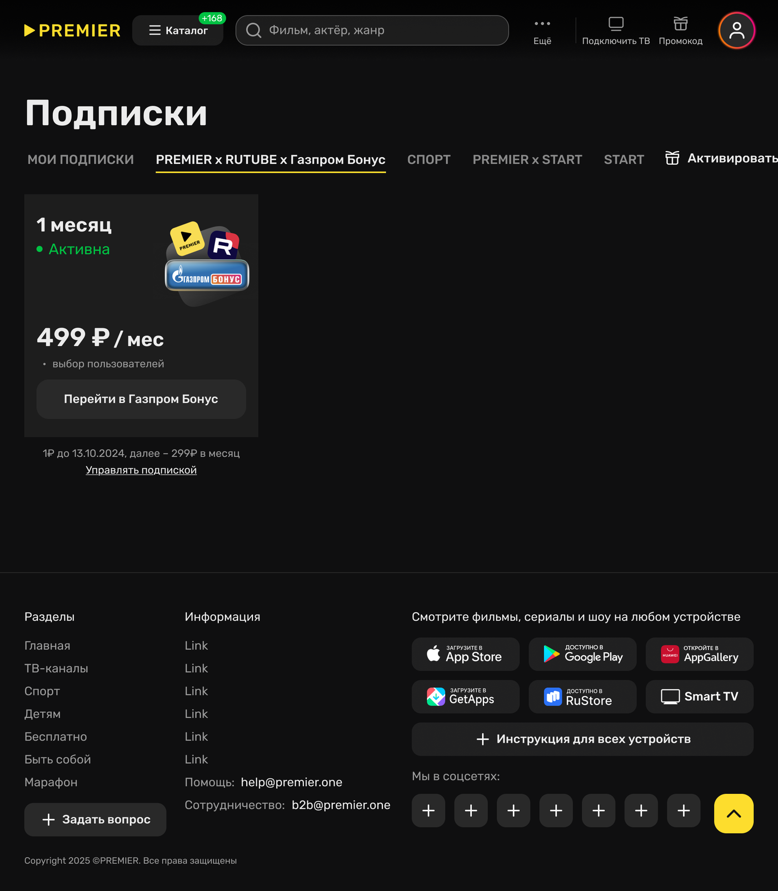
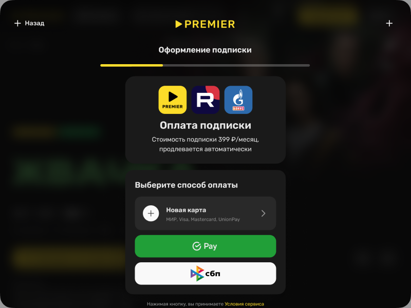

Единая подписка из трёх сервисов
Свёл подписки PREMIER, Rutube и «Газпром Бонус» в один продукт: один профиль, один платёжный сценарий, вся ценность видна до оплаты.
- Роль
- Product Designer
- Период
- 2025
- Платформы
- Web, мобильные
- Результат
- +14% конверсия покупки
Экосистема на бумаге, три продукта в интерфейсе
PREMIER давал доступ к своим сериалам и фильмам, Rutube — к видеохостингу, «Газпром Бонус» — к своей экосистеме. На бумаге это была единая экосистемная связка, но пользователь сталкивался с тремя разными продуктами: разные профили, разные платёжные сценарии, разный язык описания одной и той же ценности. Выгоду приходилось собирать в голове самостоятельно.
Решение об оплате тормозит не цена, а непонимание
Бизнес-гипотеза, с которой заходили в проект: если у пользователя один профиль, один понятный платёжный сценарий и вся ценность подписки видна сразу, — то он быстрее принимает решение об оплате, лучше понимает, за что платит, и реже испытывает разочарование после покупки.
Из этого следовал набор проверяемых метрик: конверсия покупки отвечала за скорость решения, средний чек — за понимание ценности, отток — за отсутствие разочарования после оплаты.

Рынок умел удерживать ценой — задача была научиться объяснять
Готовые модели объединения подписок на рынке были, и почти все дешевле в реализации. Но гипотеза утверждала, что решение об оплате тормозит непонимание, а не цена, — и это отсекало большинство из них.
- Единый профиль и единый платёжный сценарий Единственный вариант, который убирает причину, а не сообщает о ней. Позже к той же модели пришёл рынок: Disney объявил о полном вшивании Hulu в Disney+ на одной платформе — ради вовлечённости и снижения оттока.
- Ценовой бандл: скидка на три подписки, три отдельных входа Так собран Disney+ / Hulu / HBO Max: общий счёт, но три приложения и три аккаунта. Модель работает — 3-месячное удержание бандла 73% против 54–56% у тех же сервисов поодиночке. Удерживает здесь цена, а не понимание, поэтому проверить нашу гипотезу этим вариантом невозможно.
- Модель агрегатора, как Prime Video Channels Партнёрские подписки подключаются внутри одного интерфейса и одного счёта, но остаются отдельными строками в биллинге, а часть контента уводит в приложение партнёра. Для нас это сохранило бы три платёжных сценария — ровно то, ради чего затевался проект.
- Опереться на бренд-локомотив вместо объяснения ценности У экосистемных подписок в России есть якорная: «Яндекс Плюс» называют основной 43% тех, у кого подписок несколько. У «Газпром Бонуса» доля рынка — 2%. Тянуть связку узнаваемостью было нечем, ценность оставалось показывать интерфейсом.
- Наращивать пакет дальше вместо упрощения входа Половина подписчиков экосистемных сервисов не пользуется входящими онлайн-кинотеатрами: «спящие» сервисы копятся, и однажды подписку отменяют целиком. Добавлять сервисы в пакет, который непонятен, — растить будущий отток.
Один сценарий покупки вместо трёх параллельных
Один профиль
Права на все три сервиса привязаны к одной учётной записи. Пользователю больше не нужно понимать, где заканчивается один продукт и начинается другой.
Ценность до оплаты
Состав пакета и цена сведены в одно сравнение, в одинаковых единицах. Сопоставление тарифов перестало быть задачей пользователя.
Один платёжный сценарий
Выбор тарифа, способ оплаты и подтверждение — линейный путь без переходов между сервисами и без повторной авторизации.



Подписка стала восприниматься экосистемой с понятной выгодой
Гипотеза подтвердилась по всем трём метрикам: путь до оплаты стал короче и понятнее, фрагментация опыта между сервисами снизилась. Проект заложил основу для дальнейшего роста LTV и удержания — единый профиль и единый платёжный сценарий стали той базой, на которой можно развивать экосистемные предложения.
LTV указан за первые три месяца после релиза — это наблюдение, а не прогноз на горизонте года.